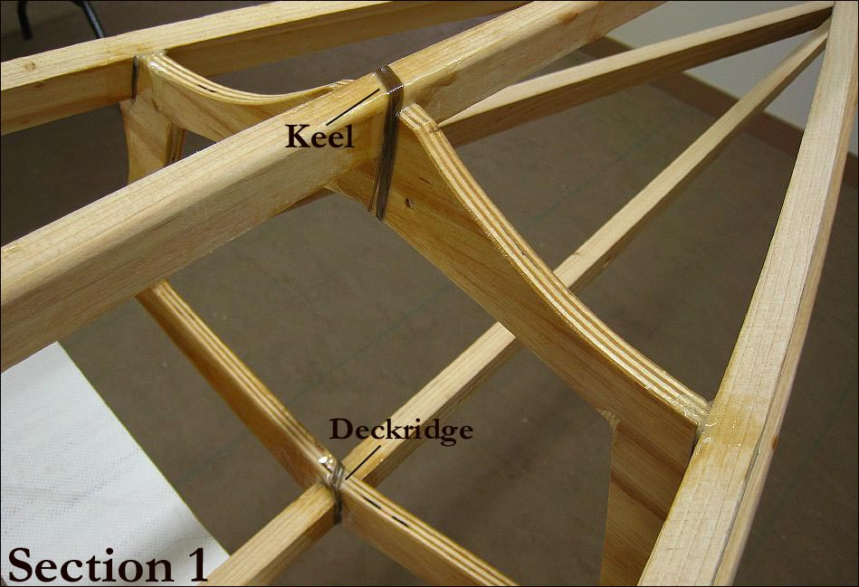

| Lash / Glue Frame | Menu Previous Page Next Page |
|

The keel and deckridge have been lashed / epoxied in the pic above. There is some overlap of epoxy onto the stringers, but this will not be noticable later after the stringers are coated with Watco oil "Natural " finish. As with pegged stringers, lashing can be used for all stringer connection. This technique was used by George Dyson on his aluminum tube Baidarka's, and I've lashed several kayaks this way, including aluminum stringers / wood sections and all wood frame construction. It has proven to be trouble-free and very strong over the long term and is my preferred method of connecting "all" stringers to cross sections. At the stems, the stringer connections may still be pegged.
|
|